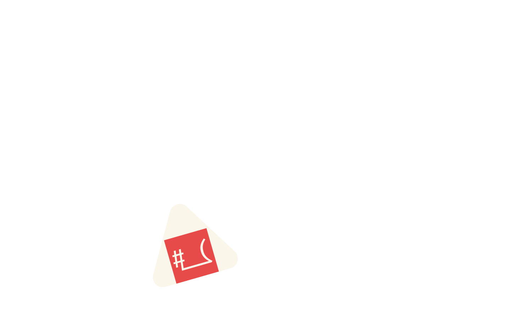
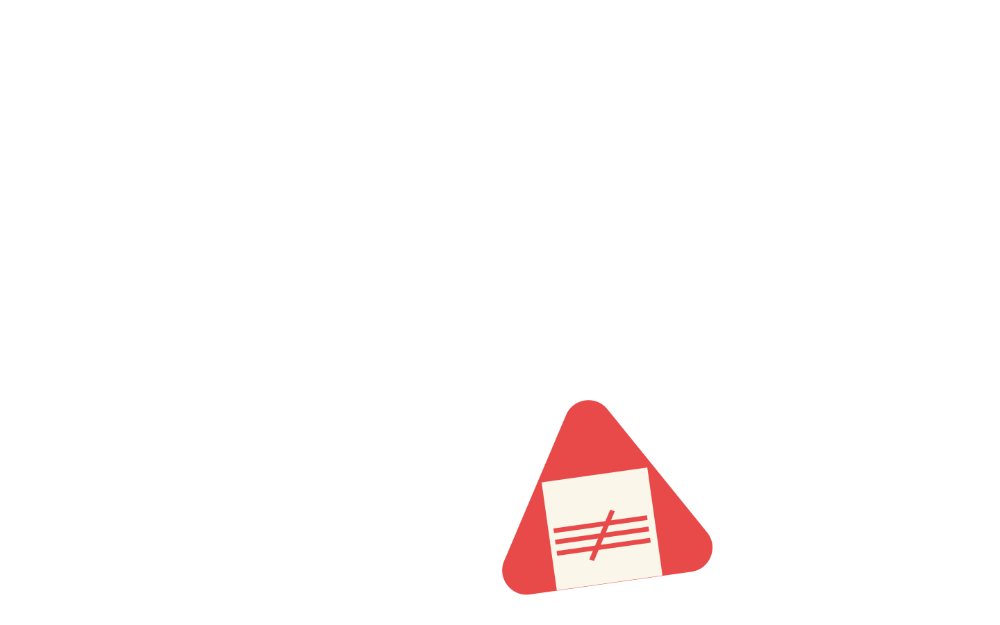
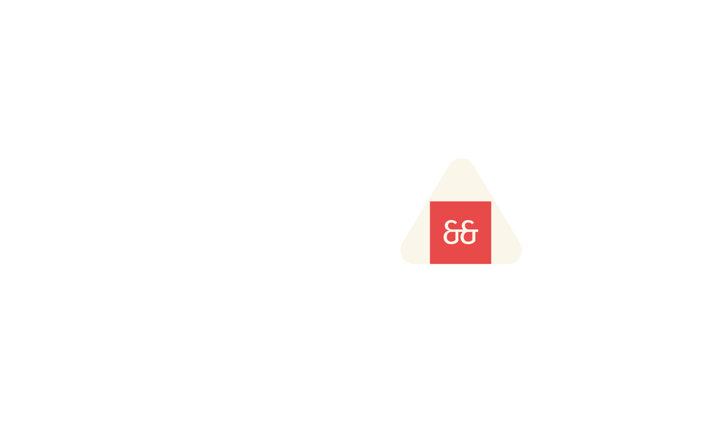
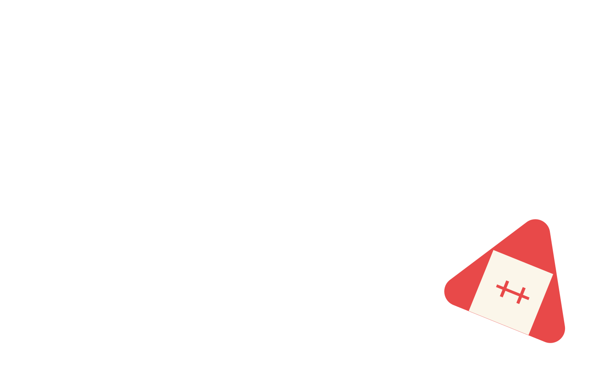

В нашей лапше-рамэн спрятаны все начертания Fira Code: лёгкий
Light, сытный Regular, насыщенный Medium и мощный Bold
СОСТАВ
Шрифт создавался на основе шрифта Fira Mono
г г г г г г г
а а а а а а
с с с с с с с
о о о о о о
б
л
ю
х
6
7
8
9
0
1
2
3
4
5
ЦИФРЫ
Цифры в Fira Code выглядят как пузырьки рамунэ: ровные, аккуратные
и одинакового размера. Каждый «пузырёк» сохраняет свою форму
в любом начертании — от лёгкого Light до насыщенного Bold
ЛИГАТУРЫ
В наших онигири есть
«секретные ингредиенты» — лигатуры
С шрифтом Fira Code онигири склеиваются в «начинки-лигатуры», и
каждый кусочек становится красивым и удобным для чтения




ЯЗЫКИ
Попробуй вкусный шрифт на любом языке
русский
қазақша
более 60+
english
türk
L
l
M
m
АКЦЕНТЫ
Брусковая засечка
Поднятая середина
ГЛИФЫ
У Fira Code целая коллекция глифов — буквы, цифры, знаки пунктуации,
математические символы и лигатуры. Всего их более 2000, так что шрифт
поддерживает не только латиницу, но и множество спецсимволов